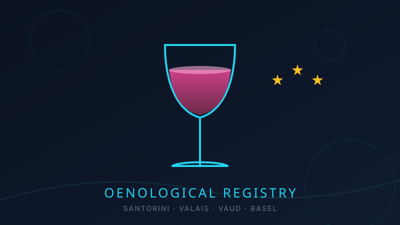

Mar 02, 2026
From Assyrtiko to Pinot Noir: A Physicist's Tasting Journal

Moving from Athens to Basel meant trading one great wine country for another — and discovering that the two could not be more different. Greece gives you volcanic minerality and sun; Switzerland gives you alpine precision and grapes almost nobody outside the country has heard of. As someone who measures things for a living, I started keeping a tasting registry (you can see the live version in my Interests page).
The Greek Benchmark: Assyrtiko
Assyrtiko from Santorini remains my reference white. Grown in basket-trained vines on volcanic ash with almost no rain, it delivers razor-sharp acidity and a saline finish that tastes like the Aegean. If a wine list has one, the decision problem is solved.
Swiss Discoveries
Switzerland keeps roughly 98% of its wine for itself, which sounds like a conspiracy until you taste why. Chasselas from Vaud is delicate and stony — a wine that rewards attention rather than demanding it. Petite Arvine from Valais brings grapefruit and a salty edge that reminds me of Assyrtiko's mineral backbone. And Valais Pinot Noir, from sun-trapped terraces above the Rhône, has become my default red.
Why Physicists Make Decent Tasters
Blind tasting is just hypothesis testing with better refreshments. You isolate variables (grape, region, vintage), make a prediction, and update your priors when you're wrong — which, in my case, is often. The registry on this site is my growing dataset; the sample size increases most weekends.